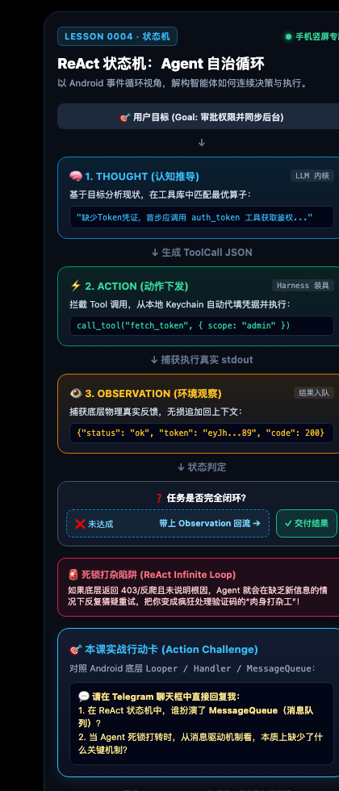

一、 核心心智模型：从单步 Prompt 到无限事件循环
普通用户使用 AI 是一问一答（Request-Response），而 Agent 的本质是一个运行在宿主 Harness 上的自治状态机（State Machine）。
ReAct 经典范式： Thought（认知推导） ➔ Action（下发工具） ➔ Observation（观察物理反馈） ➔ 循环判定。
作为 Android 工程师，你可以完全将它映射为你最熟悉的 Looper / Handler / MessageQueue：
- MessageQueue 消息队列 ➔ 模型的 Context 上下文历史。每次工具执行的 Observation 都是一条新入队的消息。
- Looper 事件泵 ➔ 外部 Harness 驱动循环。不断检查队列是否有未完成的任务，唤醒模型计算下一轮动作。
- Handler 消息分发器 ➔ Tool Interceptor 工具执行器。根据模型吐出的函数名路由给具体的物理实现。
二、 手机竖屏架构卡片（点击查看大图）

▲ 专为手机优化的高清竖屏流式架构图（点击可全屏缩放）
三、 为什么 Agent 会陷入死锁打杂？（The Deadlock Trap）
你之前之所以不得不替 AI “擦屁股”、频繁去网页处理权限，根因就在于死锁：
🚨 消息停滞陷阱： 当底层物理接口返回
缺乏有效反馈时，模型只能基于幻觉胡乱猜测重试，导致事件循环永远无法跳出，直到烧光 Token 或把人类叫来人工点击！
403 Forbidden，并且没有说明具体的鉴权要求时，Agent 的 MessageQueue 中只有“上一轮失败了”这一条贫瘠信息。缺乏有效反馈时，模型只能基于幻觉胡乱猜测重试，导致事件循环永远无法跳出，直到烧光 Token 或把人类叫来人工点击！
四、 交互模拟：单步单步调试 ReAct 事件循环
🎛️ Agent 事件泵追踪器 (Live Step Debugger)
点击下方按钮，亲手单步推进一次自动化审批的 ReAct 循环：
[待机状态] 点击上方按钮启动第 1 轮循环...
五、 检索思考与实战行动卡
❓ 本课核心思考题（支持直接在 Telegram 回复）
结合 Android 消息机制与刚才的 ReAct 循环：
1. 在 ReAct 状态机中，谁扮演了存放所有历史事件的
2. 当 Agent 遇到 403 产生死锁打转时，从消息机制角度看，必须给它增加什么拦截能力？
MessageQueue？2. 当 Agent 遇到 403 产生死锁打转时，从消息机制角度看，必须给它增加什么拦截能力？